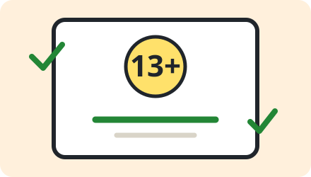
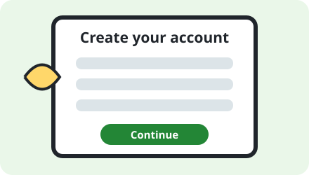
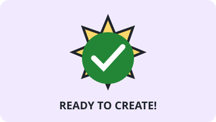

STEP 01
公式ページを開こう
まずはGitHubの公式ページで、どんな場所か見てみよう。
START HERE
むずかしそう？ まずは4つのステップで流れをつかもう。
リンクを開く → 年齢条件を確認 → 登録 → 最初の作品へ
STEP 01
まずはGitHubの公式ページで、どんな場所か見てみよう。

STEP 02
GitHubは原則13歳以上。13歳未満は本人のアカウントを作れないよ。

STEP 03
13歳以上なら、利用規約を確認して保護者とも相談しながら進めよう。

STEP 04
リポジトリにREADMEを書いて、最初の記録を保存しよう。
MAKE SOMETHING
右へ進むだけ。作る・残す・つなぐを、順番に体験しよう。
利用するサービスの年齢条件を確認し、必要な場合は保護者が自分のアカウントで操作します。GitHubとの接続許可は、読み書きできる範囲を読んでから判断しましょう。
ガイドを読み込んでいます…